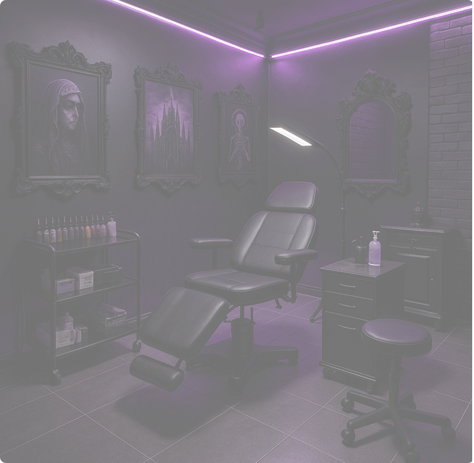
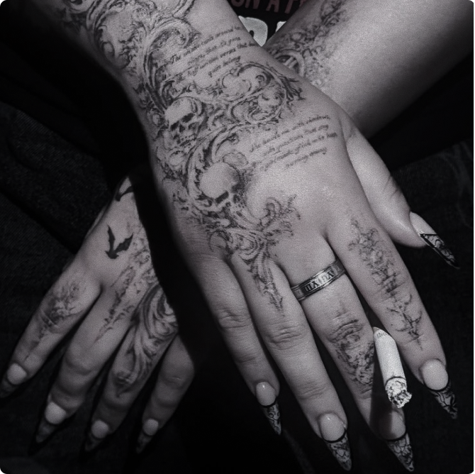
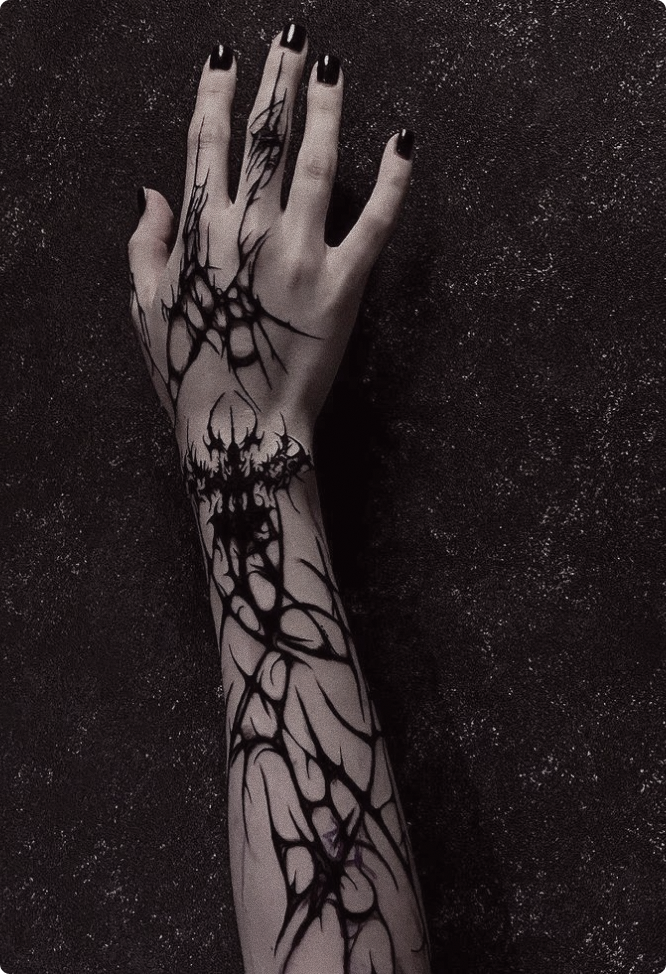
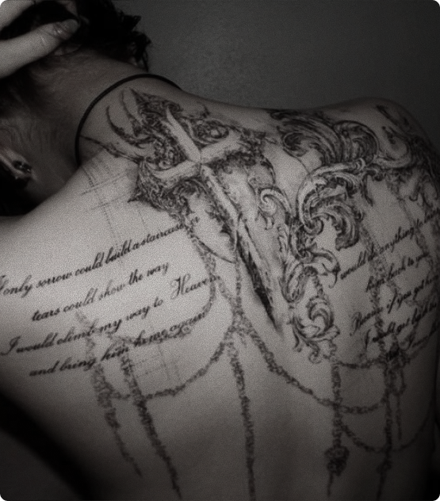
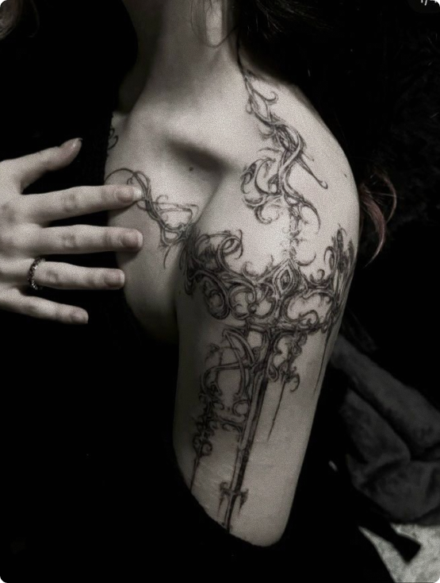

Мы специализируемся на создании уникальных готических татуировок, которые воплощают в себе всю магию темных миров, мистики и глубокой символики.
Мы ценим индивидуальность каждого клиента и всегда готовы предложить персонализированные эскизы, которые идеально подойдут под вашу уникальную историю и характер.
Наша философия — это не только татуировка, но и возможность выразить себя, свои убеждения и свою душу через искусство. Мы создаем атмосферу, где каждый чувствует себя как дома, и гарантируем,
что ваш визит будет комфортным, а процесс — приятным и безболезненным.
Приходите в Black Legend, где каждый штрих — это часть легенды

Татуировка, погружающая в атмосферу мрачной красоты. Этот готический стиль с его утонченными элементами, яркими контрастами и сложной детализацией стал воплощением не только тёмной эстетики, но и личной философии.
Здесь отражены символы силы и мистики, которые гармонично переплетаются с атмосферой древних замков и ускользающих теней.


Готика, которая живёт в каждом штрихе. Эта работа — яркий пример того, как татуировка может быть не только украшением, но и глубоким символом.
Сложные линии, тонкие детали и чёрные оттенки создают мистическую атмосферу, погружая в темный и величественный мир. Татуировка — это всегда вызов, и мы всегда готовы встретить его с достоинством.

Готическая татуировка с невероятной детализацией — это не просто работа, а целая история, запечатлённая на коже. Каждый элемент, от мрачных архитектурных форм до тонких символов, был создан с учётом древней эстетики, которая привлекает внимание своей мрачной красотой и символизмом.
Больше работ...